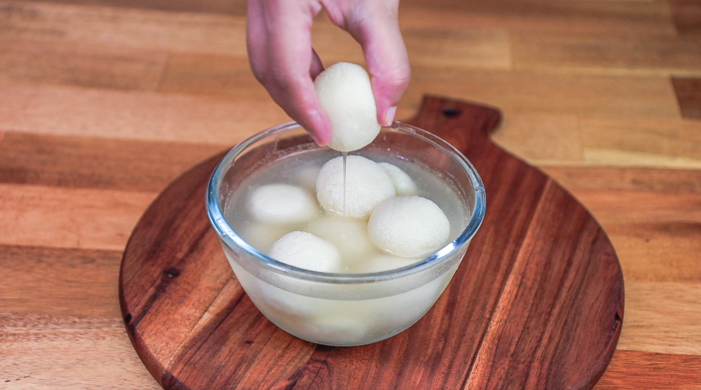

Rasgulla is a Bengali sweet which is famous all around India. Bengali Rasgulla recipe is super easy to make at home. It has chenna or paneer and it is prepared by boiling paneer balls in sugar syrup. These are also packed with protein and considered to be a healthy sweet option.

Ingredients
1-1.5 ltrsMilk
250 grams
Sugar
Lemon Juice
Maida
Elaichi
Preparation
In a vessel heat some milk.
Put the lemon juice in the heated milk and mix well
Let the milk and the lemon juice mixed garnish for some time
Place a cloth on a big vessel and put your garnished milk and lemon juice on the cloth and squeeze to remove the water out
Wash the garnished milk and lemon juice with cold water to remove the taste of bitterness of the lemon juice.
Remove the water again
Take a big vessel and mix the challa
Add some maida to it and mix well
Make some balls out of the challa
Take a vessel and add some sugar in it and mix well. Start to boil it.
After it starts boiling you then put some elaichi to get elaichi flavour and put the bals which you have made in the boiling water and elaichi.
Put the gas on high flame and wait for 5 minutes
After 5 minutes, flip them and wait for 5 minutes more to properly fry.
If properly fried, put it in the fridge to cool down.
After cooling it, your rasgullas are ready to serve